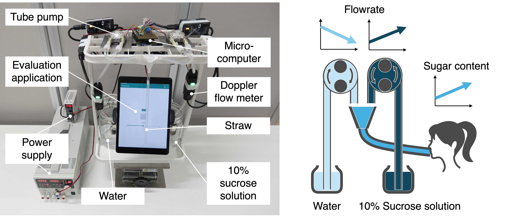

飲んでいる最中に飲料の濃度を変化させることで、味覚の順応（慣れ）を抑制し、甘味の知覚を増強するインタラクティブ・システム。 An interactive system that enhances sweetness perception by dynamically changing beverage concentration during consumption to suppress taste adaptation.

通常の飲料は味の強さが一定ですが、人間は飲み進めるうちに味に「慣れ」てしまいます。DynaDrinkは、この生理的な特性を逆手に取り、飲用プロセスに合わせて糖度を徐々に上げる制御を行うことで、最後まで「おいしい」と感じ続ける体験を設計しました。
While typical beverages have a constant intensity, humans tend to "adapt" to the taste. DynaDrink utilizes this physiological characteristic by controlling the sugar concentration to increase gradually during the drinking process, ensuring a sustained "delicious" experience.
流量センサーと高精度なポンプを組み合わせ、濃度を動的に計算・混合するデバイスを開発しました。
We developed a device that combines flow sensors and high-precision pumps, using a microcontroller to dynamically calculate and mix the concentration the moment suction is detected.